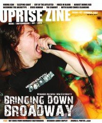

CMnexus
:
Contemporary Christian culture, music, and media.
Magazines
Profiles
Dove Awards
cmnexus.org
CM
nexus
→
Magazine list
→
Uprise Zine
→
Issues
Uprise Zine
Sum 2007, #7
< -- Prev
Issue list
Next -- >
Cover

Writers in this Issue
Harp, Lloyd
Jorge, Sir
Norris, David
Bringing Down Broadway
Cover Feature:
Bringing Down Broadway
Interview:
Joshua S. Porter
(
Showbread
)
Laurie Shipley
Featured Bands:
August Burns Red
With Blood Comes Cleansing
Rememberance
Inked In Blood
Chasing Victory
The Blue Letter
Fresh New Blood:
Cry of the Afflicted
Dagon
Cries Hannah
Sleeping Giant
Album Review:
Becoming the Archetype
-
The Physics of Fire
by Sir Jorge
Sleeping Giant
-
Dread Champions of the Last Days
by Lloyd Harp
Saints Never Surrender
-
Hope For The Best...
The Chariot
-
The Fiancée
The Wolverines
-
The Wolverines
The Chariot
-
One More Song [DVD]
Before Their Eyes
-
Before Their Eyes
Kiss The Gunner
-
Why Are We So Dead?
Neon Horse
-
Neon Horse
The Wedding
-
Polarity
Fjord
-
Lives Lives
The Burning Season
-
Onward Anthem
I Am Not I Am
-
Dear God, We Must Return Fire
by Lloyd Harp
The Dark Romantics
-
Midnight Kissing
Get Your Guns
-
The Legend of Ronnie Thunder
by David Norris
Opposition of One
-
Screaming Without Lungs
Red Flecks
-
The Story Cannot End
by Lloyd Harp
Silence The Foe
-
Shaking Hallelujah
Event Review:
"Blood and Ink Fest" by Lloyd Harp
< -- Prev
Issue list
Next -- >
CMnexus
(noun)
The magazine index
of modern music
and Christianity
© 2011 CMnexus. Last updated May 2025.
Contact:
Rants and other correspondence to:
editor -AT- cmnexus
-DØT- org
About